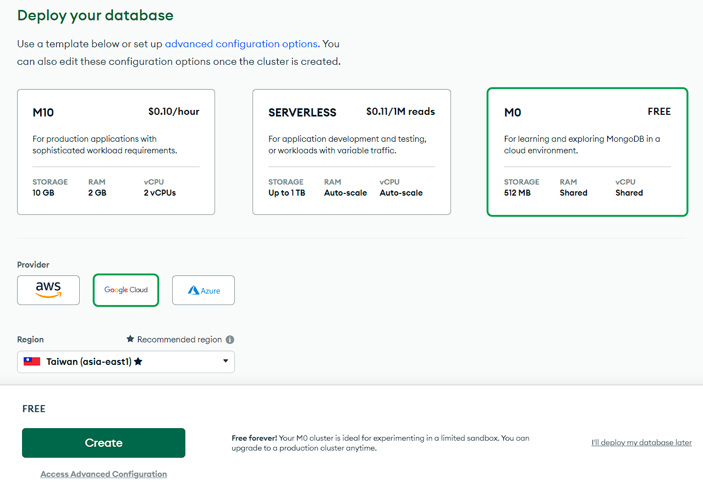
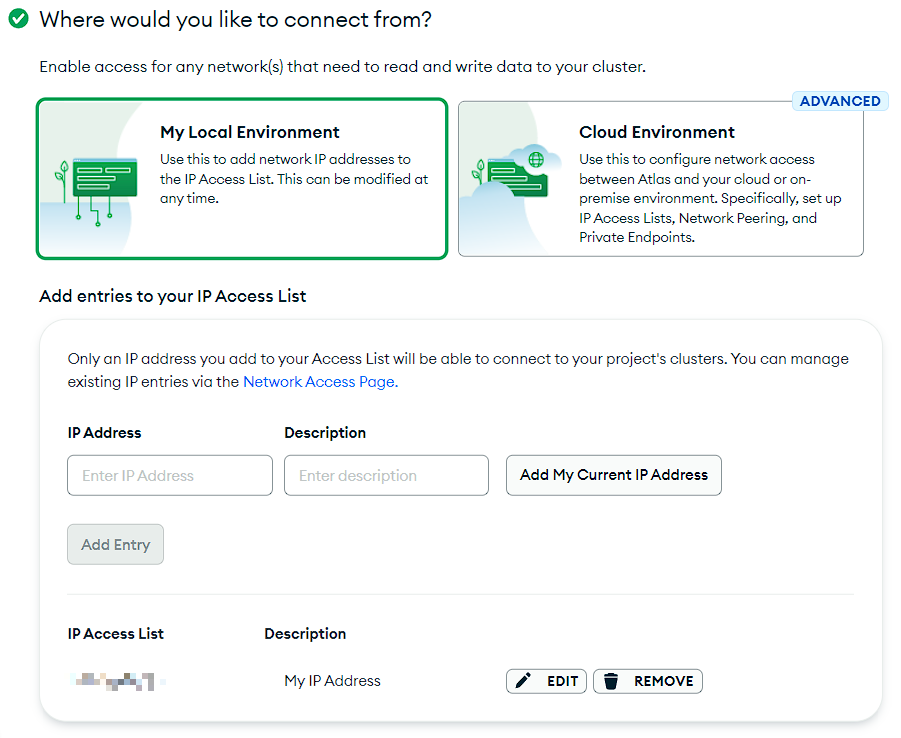
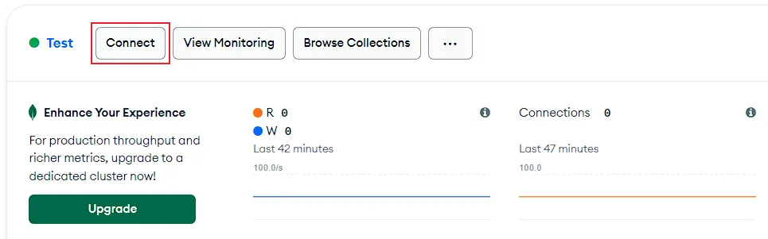
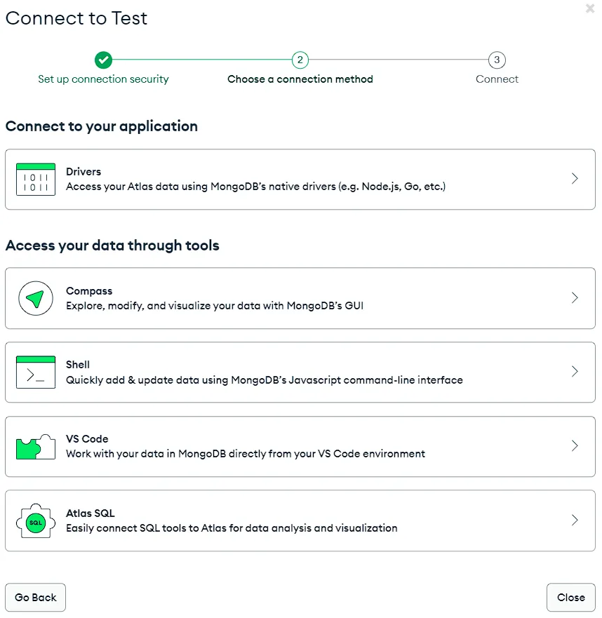
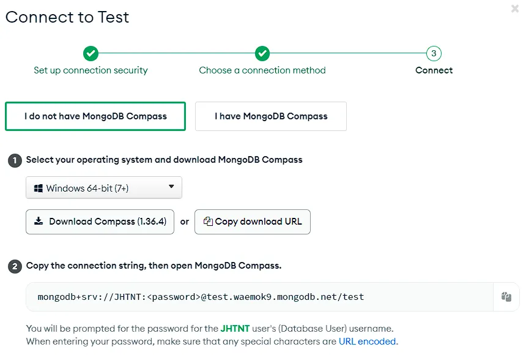
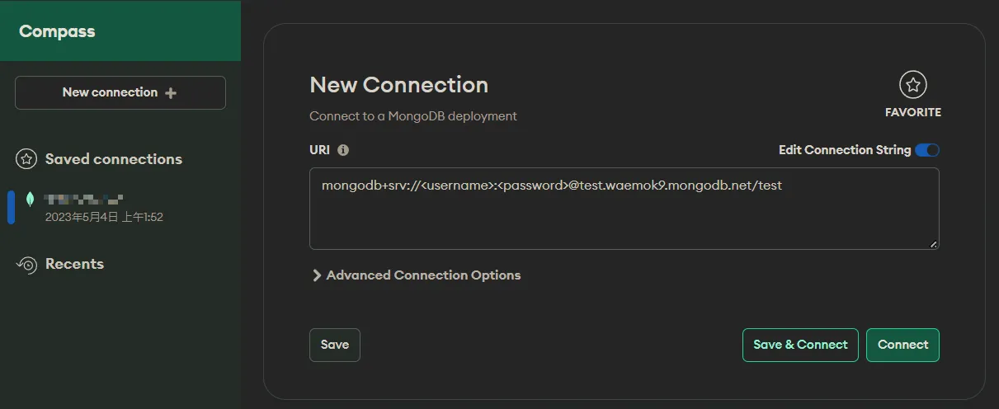
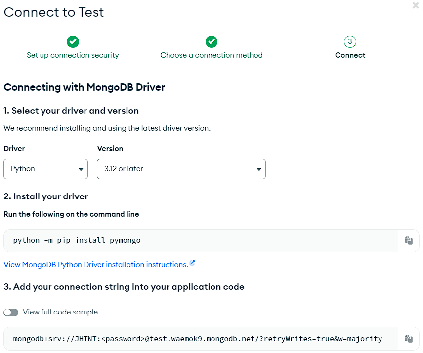

建立 MongoDB Atlas 並使用 Python 連接
建立 MongoDB Atlas
首先到 MongoDB Atlas 註冊帳號，然後會讓你填寫使用目的。
接著會看到選擇 cluster 的畫面，選擇免費方案即可。服務商推薦有臺灣節點的 Google Cloud，取個名字就能直接建立了。

設定帳號密碼與 IP
進到 quickstart 頁面先建立使用者，用於連接到資料庫，注意密碼只會明文顯示一次，因此要妥善保管，真的忘記了可以編輯再換成新的密碼。
若有其他人或服務要連接到你的資料庫，可以建立額外的使用者便於管理。
接著設定允許連接的 IP 白名單，點擊 Add My Current IP Address 可將這台機器的 IP 加入白名單。若想讓任何 IP 都能連線，可以使用 0.0.0.0/0，但這樣會有較高的安全風險。

最後按下 Finish and Close 就完成設定了。
連接到資料庫
在 Database 頁面點擊 Connect 按鈕可以打開連線的面板，下面的兩種連接方式可以搭配使用。


使用 MongoDB Compass
點擊 Compass 選項，安裝 MongoDB Compass，然後複製下方的連結。

若有多個使用者，則連結會是以下格式（後面的隨機 ID 不會跟我一樣），將 username 與 password 依照要連接的使用者修改：
mongodb+srv://<username>:<password>@test.waemok9.mongodb.net/test接著打開 MongoDB Compass，輸入修改好的連結後點擊 Connect，即可存取資料庫的內容。

使用 PyMongo
點擊 Drivers 選項，複製下方的連結。

使用 Poetry 或 pip 安裝 pymongo：
poetry add pymongo可以使下列範例程式來連接及測試：
from datetime import datetime
from pymongo.mongo_client import MongoClient
client = MongoClient("<url>") # 連接到 MongoClient
db = client["test-database"] # 存取資料庫
# 或使用 db = client.test_database
collection = db["test-collection"]
# 或使用 collection = db.test_collection
post = {
"author": "Mike",
"text": "My first blog post!",
"tags": ["mongodb", "python", "pymongo"],
"date": datetime.utcnow(),
} # 建立一個 document
post_id = collection.insert_one(post).inserted_id # 插入 document 並獲取產生的 id
repr(post_id)詳細語法可參考 PyMongo 官方文件。
MongoDB 的資料是使用 JSON 的格式儲存，與 Python 的 dict 類似，而 PyMongo 的插入取讀取資料皆可使用 dict 資料型別完成。
Reference
本部落格所有文章除特別聲明外，均採用 CC BY-NC-SA 4.0 許可協議。轉載請註明來自 JHTNT Blog！
評論